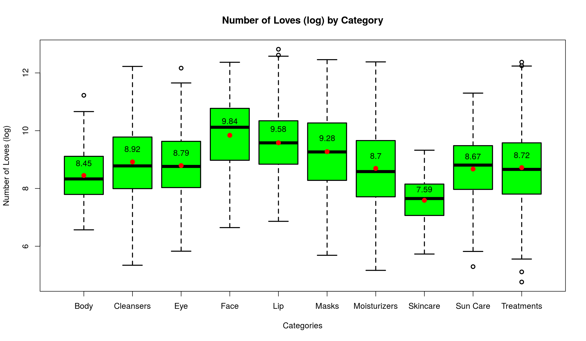
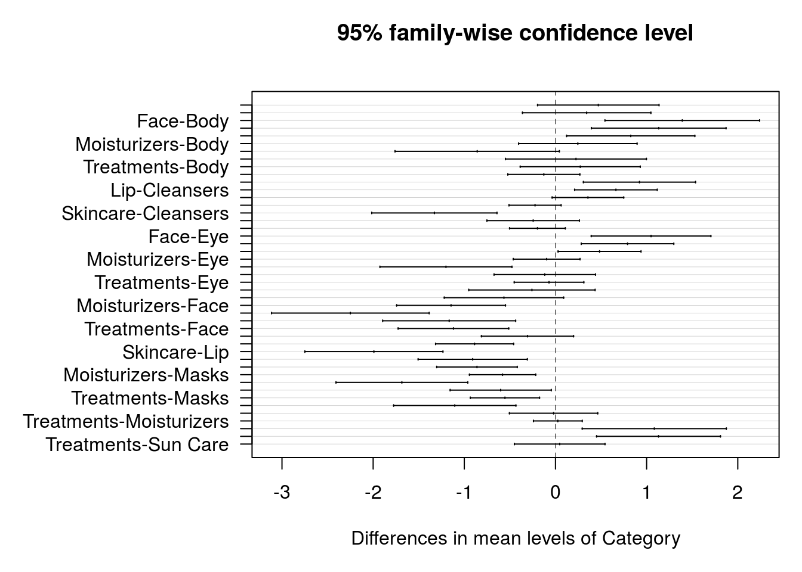
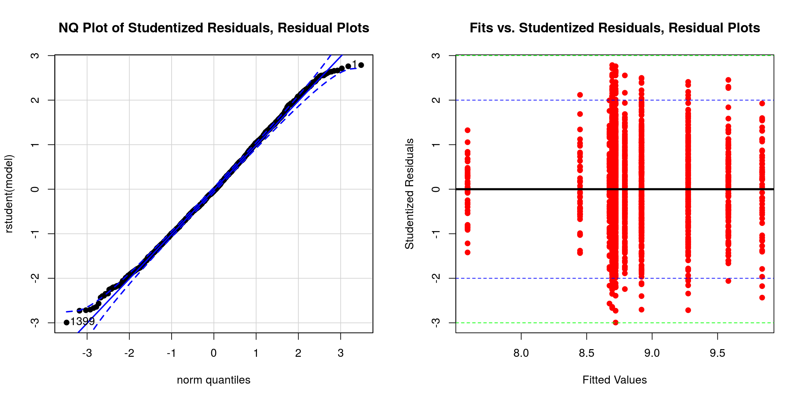

Case Study 3: Are there differences in means of logLove across categories?
Box Plot
We also have a literal Category variable in our dataset. We can take a look at a boxplot to observe if different categories of skincare products have different log number of people recommending the product.

Visually, there are significant differences in logLove across categories.
ANOVA Test
In order to test whether these differences are significant, we will use ANOVA test.
summary(aov(logLove ~ Category))## Df Sum Sq Mean Sq F value Pr(>F)
## Category 9 246 27.29 15.51 <2e-16 ***
## Residuals 2027 3567 1.76
## ---
## Signif. codes: 0 '***' 0.001 '**' 0.01 '*' 0.05 '.' 0.1 ' ' 1The extremely small p-value suggests that the probability the observed differences in logLove across Categories are random is really low.
Tukey Interval
We will plot the Tukey simultaneous 95% confidence intervals for differences in mean logLove to visualize these significant differences.

Many of the intervals do not include 0, which means there is a significant difference between means of logLove in different categories.
Residual Plots
We also want to take a look at the residual plots for the ANOVA model that we just created to see if the model's assumptions are met.
The linear normal quantile suggests that the distribution of logLove is normal inside each category, which means the assumption for ANOVA model is met.
Conclusion
Thus, we can conclude that there is a significant difference in log of the number of customers recommending products (logLove) by Category.